2017年的一篇关于边云协同，计算分层卸载的文章
摘要
当前，大多用到深度神经网络(DNN)的应用,如siri,Cortana及扫脸支付等，是以云计算为基础的。通过通信网络将绝大部分的数据运算，上传到云端进行。唯一的不足点就是延迟稍大，功耗大。
一个很自然的想法就是，充分利用周围的移动边缘设备。对神经网络动态的智能地分层，进而降低整体的延迟与功耗。最终的实验结果：端到端的延迟可以实现平均3.1x到40.7x的降低，移动端功耗平均节省59.5%到94.7%，数据中心吞的吐量扩大1.5x到6.7x。
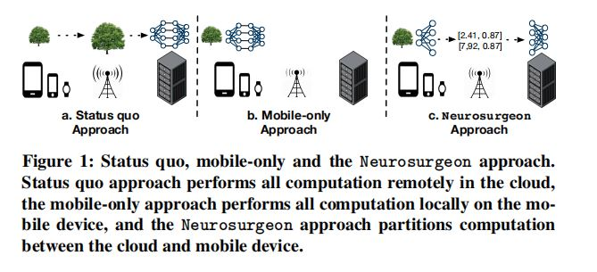
上图中三种可行方法：
- a: 通过通信网络上传大量数据到服务器端，带来1：高延迟、高功耗，2：将个人隐私数据上传服务器有可能带来隐私泄露的危险。
- b和c: 将计算部分或全部推向边缘设备，文中对8类DNN(设计图像、文本、语音处理)进行了实验，b比a快了11x。但是基于神经层的分层方法，在端到端的延迟及移动端的功耗方面表现更好。
在这篇文章中，作者主要做的工作如下:
- 对已有的方法实验分析：实验各种DNN模型在云端及在移动端执行时的延迟及功耗表现。
- DNN模型计算及输出的数据特点研究：实验显示，不同类型及配置的神经网络层，在计算量及数据规模方面有显著的不同。、
- 云与边缘的协同分层计算：根据不同层的计算及数据量特点，寻找最优分割点，得到最大的效益。
- 设计了神经网络层的性能预测模型：该模型可根据神经网络层的类型及配置，预测出其延迟及功耗指标。
完全由云端或移动端执行实验比较
其中移动端与云端的实验配置如下表
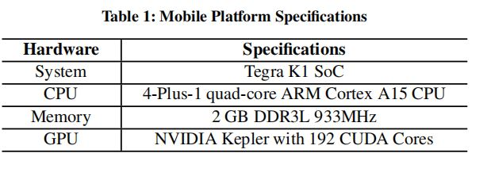 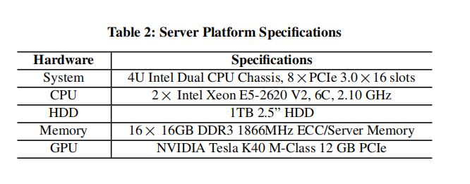
实验用的模型是，8层的AlexNet，完成单次单张152KB图片的推理，若上传云端有，3G，LTE，及Wi-Fi三种通信方式。主要的衡量指标如下：
- 通信延迟：结果显示三种通信方式中，最慢是的3G方式，最快是Wi-Fi(差了近十倍)，说明选择好通信方式很重要。
- 计算延迟：三种计算场景，mobile CPU, GPU及 cloud GPU,最慢的是移动端的CPU，但仍然比通过3G上传到云端计算快。
- 端到端的延迟：总的延迟，即通信与计算延迟二者相加。在上传到云端的方式中，上传数据的通信时间占到了总消耗时间的94%。
- 功耗：在功耗方面通过Wi-Fi方式上传，消耗的功耗最少。在移动端通过CPU计算的方式功耗最大。
（发现，通过Wi-Fi上传延迟及功耗表现还可以呀!）
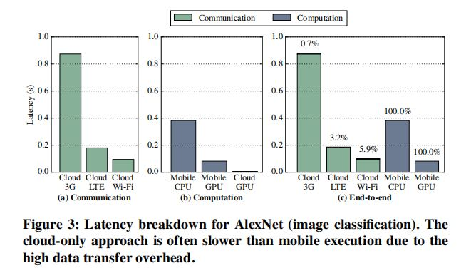 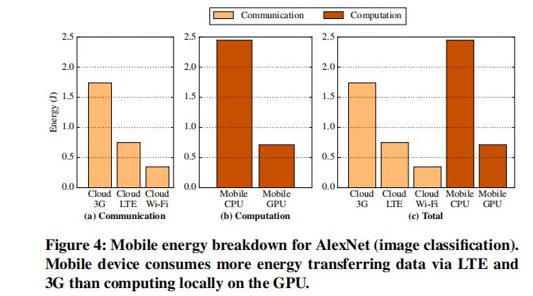
AlexNet每一层的特点
都是基于GPU上的表现
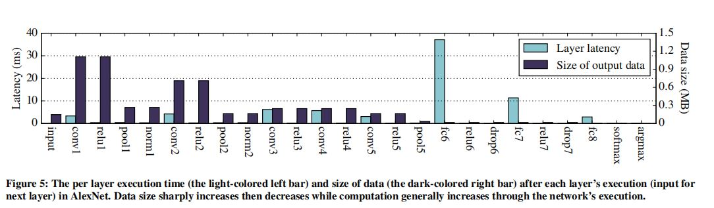
- 不同类型，不同层的网络在计算及输出数据方面有很大不同
- 卷积层及池化层在mobile GPU 上不是很耗时间，而全连接层（可能因为参数多）的延迟却很大
- 在神经网络的前半部分输出数据逐渐减少，后半部分的网络延迟逐渐变大，意味着在网络的中间部分有一个独一无二的计算分割点。
实验手动寻找最佳分割点，逐个点实验若从该点分割其延迟及功耗表现
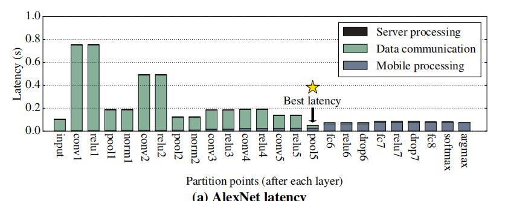 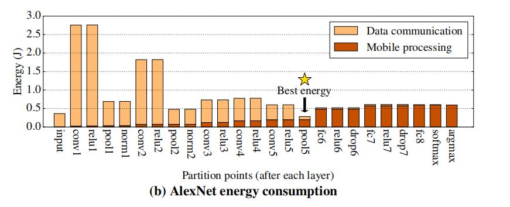
在最佳分割点，其中速度比cloud-only提升2x, 功耗节省18%
作者也在其他类型的DNN上进行了类似实验并得出结论：
- 在只有全连接层的DNN中每一层的差异很小
- CV的$DNN_s$ 往往在中间层能够找到分割点，而对于处理音频、自然语言这些的DNN其分割点往往在最前端或末端。因此需要一个系统能够自动的找到这个最优的分割点。
Neurosurgeon
最佳分割点除了模型的结构及数据规模外，其他的动态因素还有无线网络环境，及服务器端的上传网络环境。为应对这些动态因素，需要一个自动化的智能系统来寻找这个最佳分割点。
这个Neurosurgeon，包括两个阶段：部署及运行
- 部署：此阶段会根据神经网络每一层的类型产生一个预测模型，对于给定的移动及服务器平台此步骤只要运行一次
- 运行：Neurosurgen会提取目标DNN的层的类型及配置；预测每一层在移动端或云端运行所需延迟及功耗；将这些预测结果与当前的无线通信环境及服务器端数据中心的下载率结合，选出最佳分割点；执行分割后的前后任务。
构建性能预测模型
对同一种网络模型，进行不同的参数配置。得到一组关于配置参数及其延迟功耗的数据。根据这些数据对每一类的网络层建立了回归模型，根据其参数配置来预测它的延迟及功耗。[其中用到了逻辑回归及线性回归模型]
卷积及池化层： 参数包括输入特征图的维度(w及H)、数量，卷积核的大小及步长。
全连接层及Softmax层：输入及输出神经元的数量
激活层、归一化层：当前层的神经元数量
开始动态分层 DNN Partitioning
此过程包括分析目标DNN及分割点选择。整个算法执行过程如下
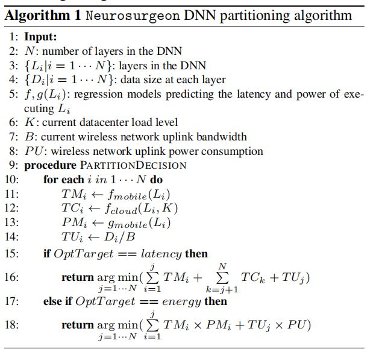
目标DNN分析
11、12行提取每层的类型及参数配置，使用回归模型预测$L_i $ 层在移动端及云端执行的延迟 $TM_i 及 TC_i$ 同时将当前数据中心的下载水平考虑进来。
13行评估了在移动端执行$L_i$ 的功耗$PM_i$
14行计算了基于当前通信环境的无线数据发送延迟$TU_i$
分割点选择
16,18行评估在当前候选点进行分割的性能表现，基于最短延迟或最少功耗选出分割点。由于回归模型简单，此过程还是相当高效的
分割执行过程
在此过程，移动端与服务器端都运行着完整的DNN模型 ，在移动端确定分割点，执行过程移动端将分割点的输出结果发送到服务器端，然后服务器端再执行后面的计算。最后将最终结果返回给移动端。
实验内容
端到端的延迟
移动端的功耗
与其他的计算卸载框架比较
在不同无线通信环境下的稳定性
不同的 sever load 水平下的表现
将计算推到边缘后数据中心(datacenter)吞吐量的提升
最佳延迟分割点，及不同模型的延迟加速
在实验的48种情形中，自动的选出了44个。以及在不同通信方式下的加速比较。
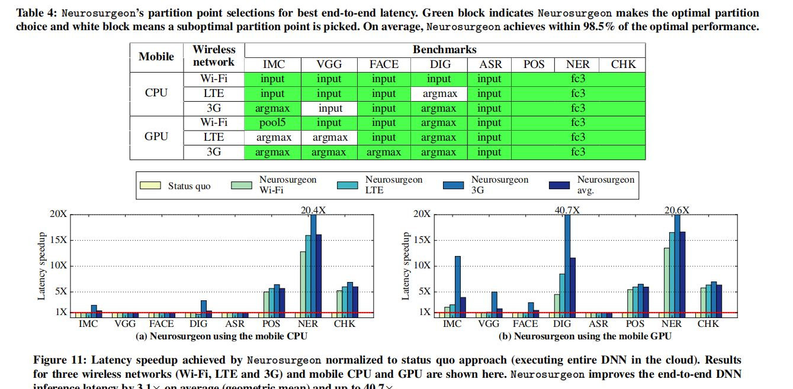
在不同通信环境下的稳定性,由下图可以看出，在不同的通信环境下，论文中的系统会动态的做出最优的调整，整个端到端的时间没有太大的起伏。
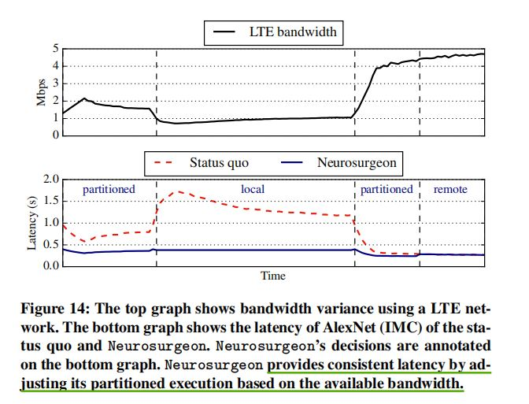